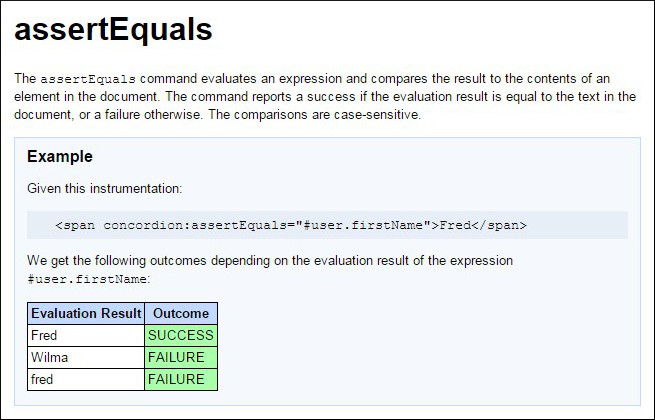
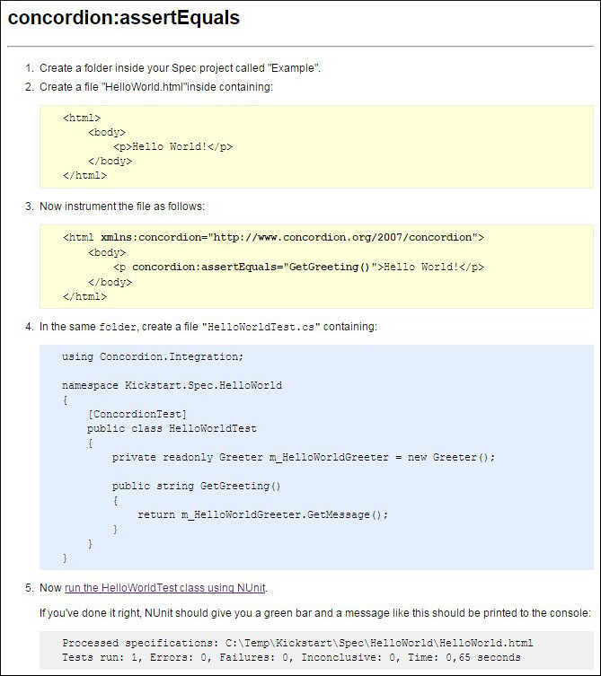

ATDD and BDD framework for C# / .NET
*
There are also versions for Java, Python, Scala, and Ruby. [supported
platforms]
Concordion.NET supports Behavior Driven Development (BDD) similar to great frameworks such as Cucumber, SpecFlow, FitNesse, and NBehave. According to the excellent classification of BDD tools, this BDD framwork focuses on business readable input (and reaches business readable output as well).
Concordion acceptance tests are so readable, they can double up as system documentation. They are written in HTML, so can be easily hyperlinked into a navigable structure. With these automated acceptance testing, you can be confident the documentation is always up-to-date.

Documentation as Specification
Agile methods help to get the highest possible value from the time invested. When investing a lot of effort into automated acceptance testing with techniques such as Test Driven Development (TDD) the idea arises to use tests as documentation. But automated testing frameworks often prevent non-developers from participation. Additionally, tests are often strongly related to the technical aspects of the system and are difficult to understand by other stakeholders.
With the emergence of Behavior Driven Development (BDD) and Specification by Example (SBE) we could use acceptance testing specifications as documentation. But specifications are still describing what the system should do from a perspective of construction. Additionally, specifications often use a structured language as scenarios in the form of given-when-then.
What about using documentation as specification? The main goal of software projects is to address customer needs and to deliver benefits to the project stakeholders. User stories of the form "As<role> I want <feature> so that <benefit>" remind us to focus on the benefit. The concept of Minimal Marketable Feature (MMF) and Minimum Viable Product (MVP) recognize that a single story may not have enough customer value. Thus, we have to change our viewpoint and look at the problem from the customer perspective. Documentation such as marketing papers or user manuals describe which benefits the software system can bring for the customer as well as how the desired benefit can be achieved.
Concordion.NET is a BDD framework based on HTML and can use the expressiveness of the web to describe the software product from the customer perspective. We can use documentation that shows how to use the product as inputs into our development process. BDD in plain English with the help of Concordion.NET enables to work outside in: first describe the customer benefits, drive your tests with this description, use the tests as basis for your implementation.
From Specification to Living Documentation
Traditionally specifications often focus on the product and the capabilities it should deliver. Thus, this type of documentation describes what the system does instead of what the user gains. It mainly lists the outputs the system produces based on the inputs. This is mainly targeted on the development team and not so much on the customer. An example of such a classical specification could look like the following example:

In contrast user related documentation describes system behavior from the customer perspective. For example a product box summarizes the greatest benefits the software product provides for its users. Moreover, a user manual explains how to interact with the system to obtain the desired benefits.
Such a type of documentation can also be utilized by the development team as well, to get a shared understanding on what to focus during the development work. As a result we get a new style to write specifications that changes the viewpoint from describing how the system should behave to how the user can get the benefit. An example of such a specification by documentation could look like the following example:

Such specifications aren't only able to double as system documentation. They are in fact user documentation that double as specification.
For an example of such an documentation that is a specification as well, please have a look at the tutorial. It is composed of such active specifications.
Specification by Example
As Concordion specifications are written in simple HTML, it provides a good basis for a living documentation system. You can use a what-you-see-is-what-you-get (WYSIWYG) editor like BlueGriffon or Microsoft Web Expression to describe your intended behavior of your software in simple HTML documents and instrument them to verify your system under test.
Watch the video to see how to use Concordion.NET. As the active specifications are readable to business people, it can help to achieve the goal of purpose driven development. Concrete examples within your specifications are turned into executable specifications with a small set of commands (e.g. "set", "execute", "assertEquals"). These allow checking the examples against the real-life system.

Behavior Driven Development with Active Specifications
- Start using Concordion.NET, a flexible BDD tool. To setup your infrastructure, please Download the latest version of Concordion.NET.
- On the Getting Started page you'll find a kick-start solution for your C# projects in Visual Studio as well as a first example.
- To execute your automated tests please visit the page on running Concordion.NET tests with NUnit.
Additional Information
- Jeffrey Cameron has written a blog on living in Concordion with .NET, which describes how to use the acceptance testing tool, Concordion.NET. Please note that you can use NUnit to run Concordion.NET tests (instead of Gallio). Thus, you can skip part 5 of the blog that relates to Gallio. If you want to debug Concordion.NET tests, you can use the same techniques when debugging with NUnit.
- The Concordion.NET project has been moved from Google Code to GitHub.